Universidad Tecnológica de Puebla
TSU en Desarrollo de Software Multiplataforma
Práctica: Base de Datos de Asistencias con PostgreSQL y Neon
| Alumno | Duilio César Capilla Cuautle |
| Grupo | 7° E |
| Docente: | Javier Nolasco Hernandez |
| Materia: | Optativa I – Base de Datos en la Nube |
Objetivo
Implementar una base de datos de asistencias utilizando PostgreSQL y Neon.
Desarrollo de la práctica
Paso 1. Verificación de PostgreSQL
Se comprobó la instalación mediante psql --version.
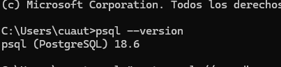
Paso 2. Conexión con la base de datos en Neon
Se estableció la conexión desde CMD utilizando la cadena de conexión de Neon y una conexión SSL.
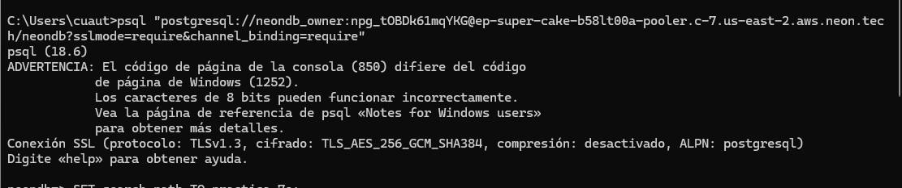
3. Revisión del entorno de base de datos
Una vez dentro de psql, se revisó el entorno disponible para comprobar que se estaba trabajando en la instancia correcta. Esta verificación ayudó a identificar la base de datos activa y a confirmar que la sesión estaba lista para ejecutar las instrucciones de la práctica.
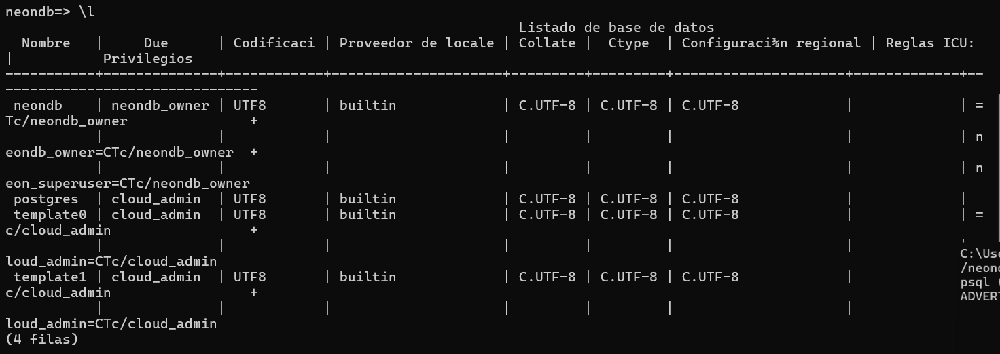
4 Creación del modelo de asistencias
Se diseñó un esquema llamado practica_7e para mantener separadas las tablas de esta actividad. Dentro del esquema se crearon las tablas materia, profesor, grupo, alumnos y asistencia. También se insertaron los datos del grupo 7E, sus materias, profesores y alumnos. La tabla asistencia quedó relacionada con las demás tablas mediante claves foráneas.
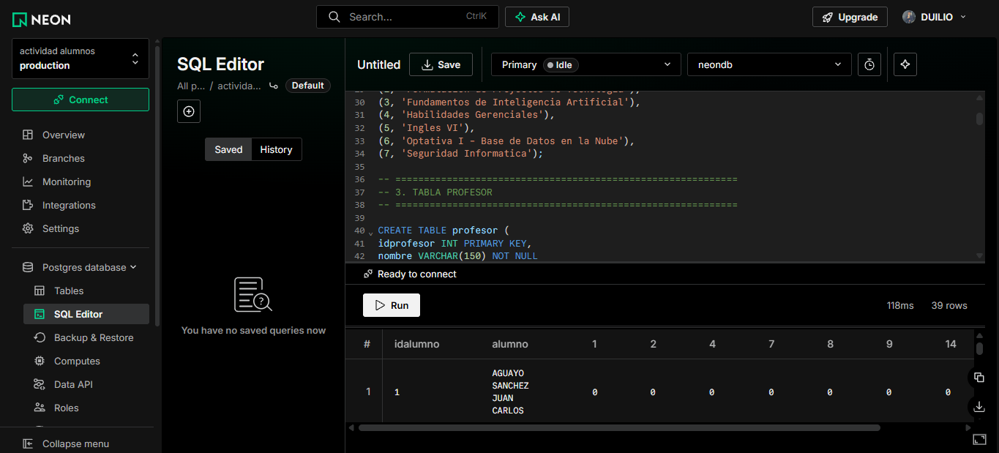
5 Comprobación de las tablas creadas
Con el comando \dt se comprobó que las cinco tablas de la práctica fueron creadas dentro del esquema practica_7e. La salida mostró alumnos, asistencia, grupo, materia y profesor, todas pertenecientes al usuario de la base de datos.
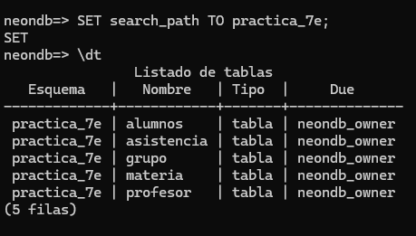
6. Consulta de los registros de asistencia
Posteriormente se ejecutó una consulta sobre la tabla asistencia. El resultado mostró cuatro registros correspondientes a la materia 6, grupo 1 y profesor 6, con los alumnos 6, 30, 31 y 35 en la fecha 18 de septiembre de 2026. Con esto se comprobó que los datos habían sido insertados correctamente
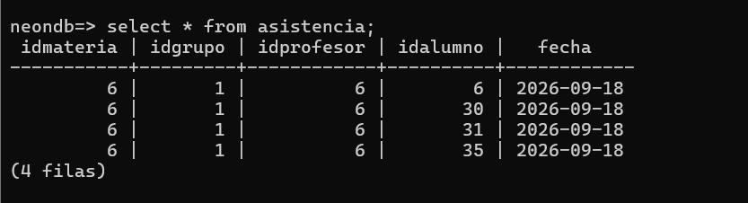
7. Preparación del archivo de la práctica
En la carpeta de trabajo se revisaron los archivos del proyecto antes de ejecutar el script desde la terminal. Esta parte permitió comprobar la ubicación desde la cual se trabajó y mantener organizado el archivo SQL junto con los demás recursos de la actividad.
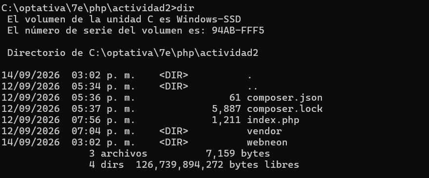
8. Ejecución completa del script y consulta con relaciones
El script se ejecutó desde la terminal contra la base de datos de Neon. Durante la ejecución se eliminaron y recrearon los objetos necesarios, se generaron las tablas y se insertaron los datos. Además, se realizó una consulta relacionando las tablas para mostrar información más comprensible: fecha, alumno, materia, grupo y profesor, en lugar de mostrar solamente identificadores numéricos.
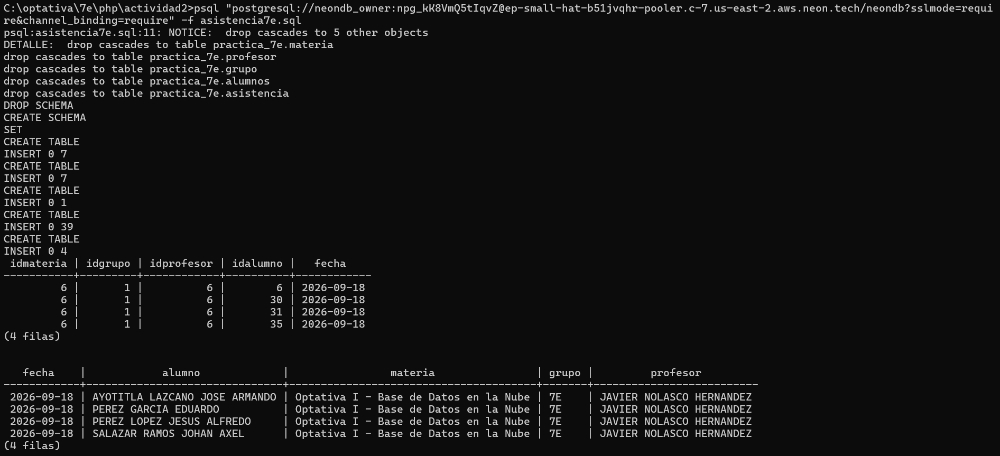
9. Validación final de tablas y datos
Para verificar el resultado final se utilizó \dt practica_7e.*, con lo que se confirmó que las cinco tablas pertenecían al esquema correcto. Después se consultó practica_7e.asistencia y nuevamente se observaron los cuatro registros esperados.
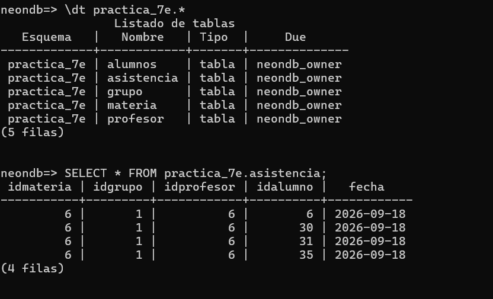
10. Comprobación de la clave primaria compuesta y claves foráneas
Finalmente se inspeccionó la estructura de la tabla con \d practica_7e.asistencia. Se confirmó que sus cinco campos son obligatorios y que la clave primaria es compuesta por idmateria, idgrupo, idprofesor, idalumno y fecha. También se comprobaron las cuatro claves foráneas hacia las tablas de alumnos, grupos, materias y profesores. Esta decisión evita registrar dos veces exactamente la misma asistencia para el mismo alumno, materia, grupo, profesor y fecha.
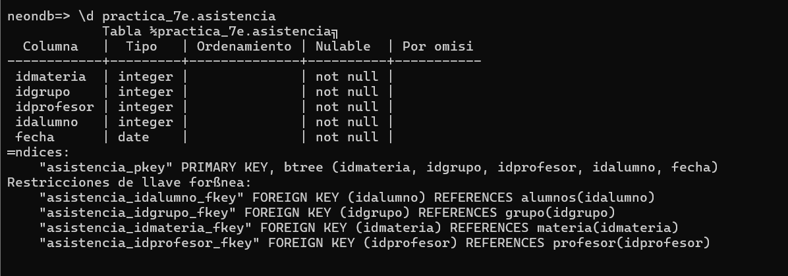
Después de registrar las asistencias de los alumnos, se consultó la vista lista_asistencia ordenando los registros mediante el identificador de cada alumno. Esta vista permite presentar la información de una manera similar a la lista de asistencia original, colocando a los alumnos en las filas y los días de clase en las columnas.
SELECT * FROM lista_asistencia
ORDER BY idalumno;
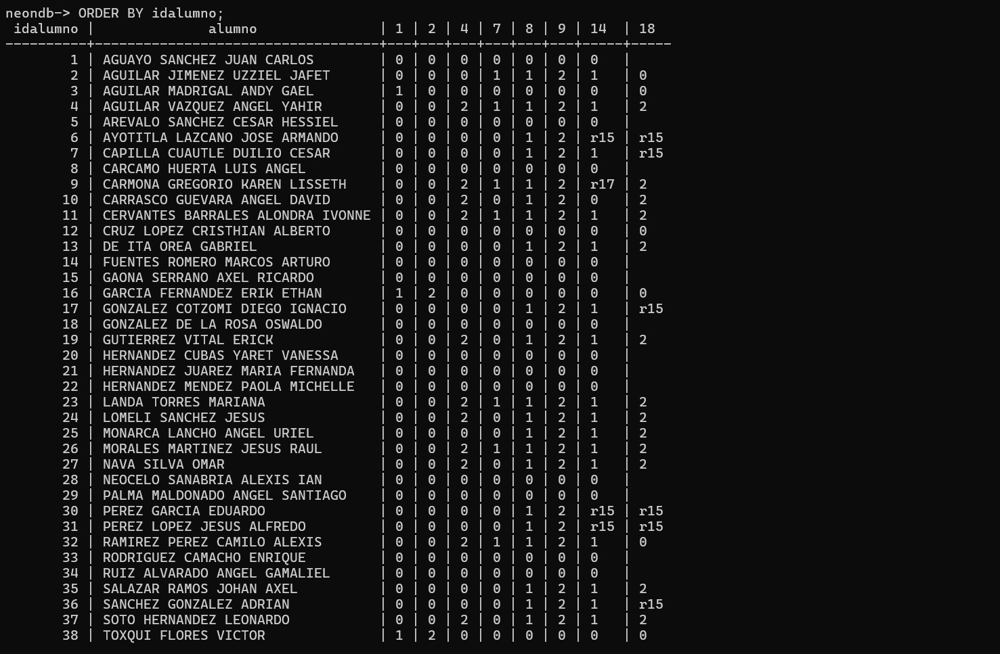
Conclusión
Con esta práctica pude comprender de una forma más clara cómo se estructura una base de datos relacional y cómo se conectan diferentes tablas por medio de claves foráneas. También aprendí que no siempre es necesario utilizar un identificador automático para cada registro, ya que en el caso de la tabla asistencia fue más conveniente utilizar una clave primaria compuesta con los campos de materia, grupo, profesor, alumno y fecha. Además, pude practicar el uso de PostgreSQL desde la terminal con psql y trabajar con una base de datos alojada en Neon. Las consultas de verificación me permitieron comprobar que las tablas se crearon correctamente, que los registros fueron insertados y que las relaciones entre las tablas funcionan. En general, la práctica ayudó a reforzar el uso de SQL y la importancia de diseñar correctamente las llaves y relaciones antes de almacenar información.